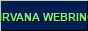

Key Live Shows (1991–1994)
where the songs actually lived — setlists, chaos, and broken guitars
Nirvana was never a polite studio band. Live, the tempos ran faster, Kurt’s voice tore itself apart, and nobody knew if the night would end with an encore or with a smashed Mustang shoved through an amp speaker.


Kurt on stage & the trio around 1992
0. Community World Theater, Tacoma — April 18, 1987
First documented fliered public club show (initially billed as Skid Row, with Aaron Burckhard on drums). While the famous Raymond, WA house-party tape was long misdated to March 1987, LiveNirvana chronology places that party in summer 1987. View on Map →
0b. OK Hotel, Seattle — April 17, 1991
Benefit show in Pioneer Square where Nirvana premiered “Smells Like Teen Spirit” live for the first time. Audience video and cassette recordings exist in collector circulation. View on Map → · Listening Room (SLTS) →
1. Paramount Theatre, Seattle — October 31, 1991
Halloween night, five weeks after Nevermind came out. Nirvana had just returned to Seattle as the biggest rock band in the country, playing a hometown theater filmed on 16mm. Opening with “Jesus Doesn’t Want Me for a Sunbeam,” they tore through 19 songs with Kurt wearing a green plaid shirt and looking almost comfortable.
| Detail | Notes |
|---|---|
| Support acts | Mudhoney, Bikini Kill |
| Highlight | Early live “Rape Me” and “Endless, Nameless” closer with smashed gear |
| Tape status | 16mm film + multitrack audio (circulated in fragments until 2011 release) |
2. Saturday Night Live — January 11, 1992
The very day Nevermind hit #1 on the Billboard 200. Nirvana played “Smells Like Teen Spirit” first, then returned for “Territorial Pissings” — screaming at maximum volume into national living rooms, ending with Krist throwing his bass in the air and Kurt smashing his Stratocaster into Dave’s drum kit. During the goodnights, Kurt and Krist kissed on live television to annoy homophobes watching at home.
3. Reading Festival, England — August 30, 1992
Rumors in the British music press said Kurt was dying or couldn’t walk. So he rolled onto the stage in a wheelchair, wearing a hospital gown and a blond wig, sang one weak line of “The Rose,” stood up, ripped the wig off, and slammed into “Breed.” 70,000 people lost their minds.
| Setlist Highlights | Notes |
|---|---|
| Opener | “Breed” → “Drain You” → “Aneurysm” |
| Rare tracks | “D-7” (Wipers cover), “The Money Will Roll Right In” (Fang cover), “tourette’s” |
| Closer | “Territorial Pissings” + “The Star-Spangled Banner” noise |
4. Live and Loud, Pier 48, Seattle — December 13, 1993
Taped for MTV New Year’s Eve during the In Utero tour. Pat Smear was now on second guitar, Lori Goldston played cello on songs like “Pennyroyal Tea” and “Dumb,” and Kurt looked sharper and angrier than ever. They closed with “Endless, Nameless” and tore the stage set down around themselves while cameras kept rolling.
4b. Aragon Ballroom, Chicago — October 23, 1993
At the end of the set, Dave Grohl announced “All Apologies,” but Kurt tuned down and launched into an unreleased new song instead — the only live performance of “You Know You’re Right.” Audience tapes circulated in 1994 under titles like “On a Mountain” and “Autopilot.” Listening Room (YKYR) →
5. Terminal Eins, Munich — March 1, 1994
The last concert Nirvana ever played. A converted airport hangar in Munich, Germany (roughly 3,000 people). The power went out during “Come As You Are,” forcing the band to restart it. Kurt had severe laryngitis and bronchitis, Krist joked between songs about not playing the “Munich Enormodome,” and the final encore ended with “Heart-Shaped Box.” Three days later, in Rome, the tour was cancelled.
| Final Show Facts | Details (LiveNirvana) |
|---|---|
| Date & Venue | March 1, 1994 — Terminal Eins (Flughafen München-Riem), Munich |
| Attendance | ~3,000 people |
| Opener / Closer | “My Best Friend’s Girl” (The Cars cover) / “Heart-Shaped Box” |
| Notable incident | Brief power outage mid-set during “Come As You Are” |
See also: Bootlegs & Rarities · Timeline
Last updated: 11/16/94
[ home ] · Nirvana Memorial Web Ring



© 1994 · in memory of Kurt Cobain